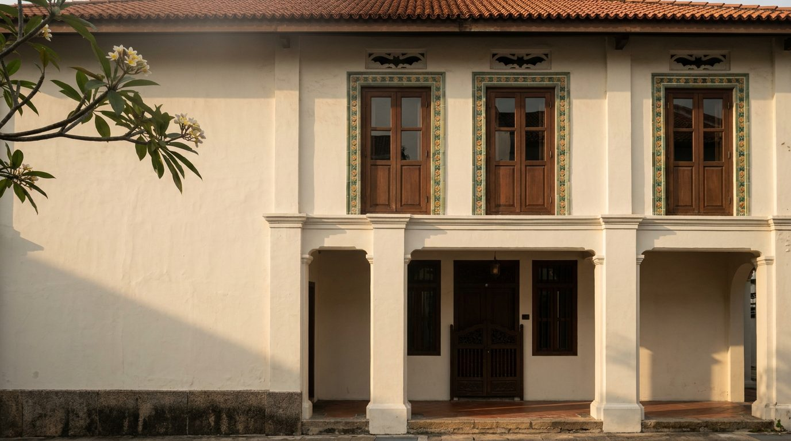
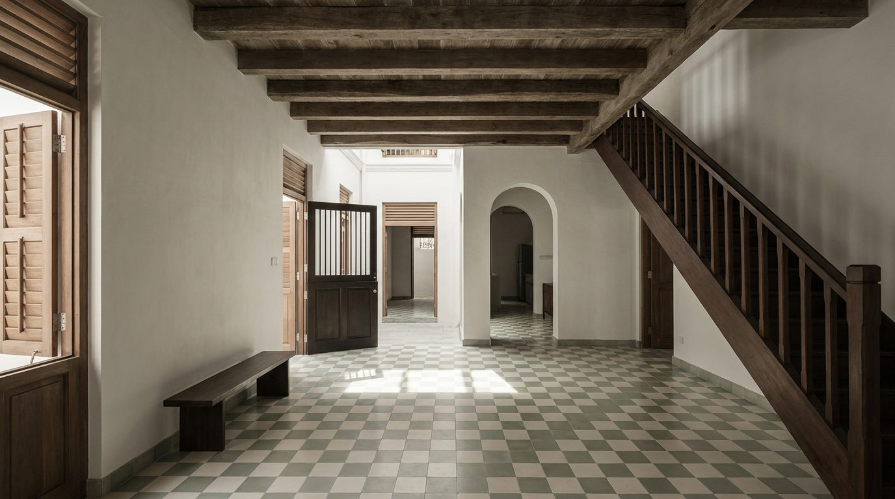

Atlante · INT-SG-02 · Singapore · Asia
Shophouse restaurato a Emerald Hill con cortile di luce e piastrelle cementizie
Esempi · esterno e interno


Perché funziona
Quiet per scelta: il cliente di Singapore conosce la torre e cerca la casa. Qui compra una stratificazione, non un panorama, cioè due piani di calce, teak e piastrelle cementizie dentro un tessuto urbano tutelato dal 1985. Per Poetica la voce serve come controcampo esatto di int-sg-01: stessa città, luce opposta, ombre corte e zenitali invece di riflessi speculari. Il made in Italy entra come arredo basso e materia cotta, non come marmo. Non deve diventare una casa-museo per turisti: niente ventagli, niente lanterne, niente rosso Peranakan acceso.
Architettura · elementi riproducibili
- cortile interno di luce 2600x3400 mm, lucernario a 6500 mm, grondaia e pluviale in rame
- porta a mezza altezza pintu pagar 1200x1800 mm in legno, doghe 40 mm, cerniere a vista
- pavimento in piastrelle cementizie 200x200 mm, posa a scacchiera, fuga 3 mm
- scala in teak, alzata 190 mm, pedata 240 mm, larghezza 900 mm, ringhiera 900 mm
- persiane in legno a doghe 60 mm su finestre 1500x2400 mm, telaio 60 mm
- soffitto a 3400 mm con travi in legno 150x200 mm a vista, interasse 900 mm
- soglie e zoccolo in pietra 20 mm, battiscopa 150 mm, gola di ombra 8 mm
Fatto verificato: Emerald Hill è la prima area di conservazione di Singapore, annunciata dall'URA nel 1985; le case sono terrace house in stile Transitional, Late e Art Deco, con pintu-pagar ornamentali e facciate del piano terra decorate a piastrelle ceramiche, lessico definito 'Chinese Baroque'.
Fatto verificato: gli shophouse di Singapore si costruiscono tra il 1840 e il 1960 in sei stili; la pianta è lunga e stretta, con cortili interni, vani scala aperti e lucernari, e il pintu pagar è la porta a mezza altezza che dà privacy e ventilazione.
Fatto verificato: lo stile Late (1900-1940), diffuso a Emerald Hill, usa piastrelle Peranakan, colonne corinzie, finestre francesi a tutta altezza e aperture di ventilazione a motivo di pipistrello; le piastrelle di facciata arrivavano dall'Europa e dal Giappone.
Valutazione: il contrasto con int-sg-01 è di scala e di luce, 3,4 m sotto travi di legno e un cortile che porta il cielo dentro invece di trenta piani di vetrata; il registro quiet regge solo se le piastrelle restano desaturate e poche.
Luce
Prompt di generazione (EN)
Ground-floor living room of a restored 1900s shophouse on Emerald Hill, Singapore. 3.4 m ceiling with exposed timber beams 150 x 200 mm at 900 mm centres, lime-washed walls in matte chalk white, floor of 200 x 200 mm cement tiles in pale sage in a checkerboard, original teak staircase with a 190 mm riser, timber louvred shutters at the 1500 x 2400 mm windows, a 1200 x 1800 mm half-height pintu pagar door left open, rooms in enfilade toward an internal light court. Only a low 380 mm bench in dark timber. Hard high sun at 68 degrees dropping through the air well, short crisp shadows on tile, cool 5200 K bounce, rear rooms in soft shade. 28 mm lens at 1.30 m, two-point perspective, parallel verticals, desaturated warm-neutral grade. no people, no text, no logos.